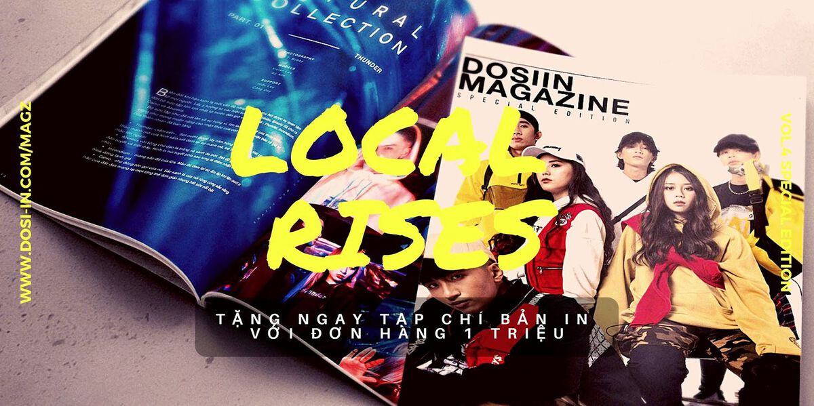
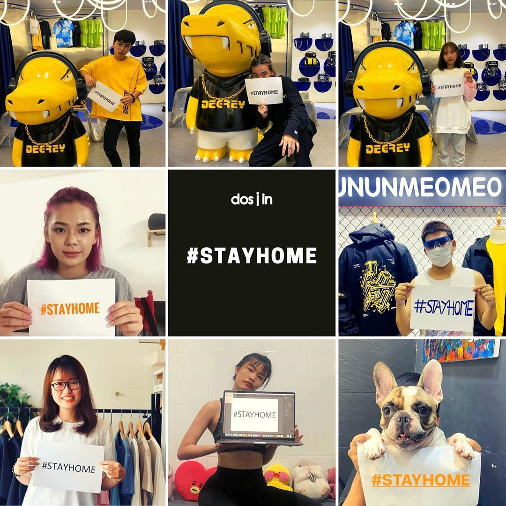

Xin chào, mình là Dosiin. Dù bạn là người mới, hay chúng ta đã từng có khoảng thời gian dài bên nhau, thì có lẽ bạn vẫn cần Dosiin giới thiệu một chút về bản thân chứ, đúng không nào?
Với những bạn mới biết, mới nghe đến Dosiin thì quả là tuyệt vời, Dosiin rất nóng lòng để được làm quen cùng những người bạn mới. Còn với các bạn trẻ nào đã “in relationship with Dosiin” khá lâu rồi thì hãy cùng kiểm chứng xem chúng ta hiểu nhau đến mức nào nhé. Hãy đi thôi nào, các Dosi-er ơi!
Chính thức ra đời vào tháng 10/2016, Dosiin là 1 plat-form thương mại điện tử, là kênh media, tạp chí điện tử ĐẦU TIÊN tại Việt Nam chuyên trị về thời trang và life-style, khai thác mảng văn hóa đường phố, street style nội địa và thế giới. Dosiin là cái tên đầu tiên tiên phong và dẫn đầu xu hướng tìm kiếm cơ hội hợp tác quảng bá và phân phối sản phẩm từ các thương hiệu nội địa và quốc tế đến với cộng đồng giới trẻ Việt Nam.
Bên cạnh hàng trăm thương hiệu đường phố “chất lừ” trong và ngoài nước như: Bad Habits, NOW, TSUN, SWE, Chillin, Snazzy, Tobi… Dosiin đang chứng kiến sự đổ bộ ấn tượng của nhiều thương hiệu với phong cách tinh giản, gần gũi hơn như: T-Mag, White son, Rebel Nerd, Billion Dreamer... Ngoài ra, Dosiin còn là điểm đến và là nơi hạ cánh đầu tiên của những thương hiệu tầm cỡ quốc tế, phải kể đến DOMBA, Clear Weather, …
Cùng với vai trò dẫn đưa giới trẻ trên hành trình thời trang, Dosiin sẽ là cầu nối giúp các bạn trẻ nhanh chóng tiếp cận với những thông tin thời trang, xu hướng ăn mặc nóng sốt nhất không chỉ tại thị trường thời trang nội địa, mà cả trên toàn cầu.
Dosiin mong muốn sẽ trở thành nơi tìm về của giới trẻ, là nơi giúp giới trẻ giải đáp tất cả những câu hỏi: Làm sao để cập nhật xu hướng thời trang mới nhất?, Làm sao để phối đồ đúng chất, chuẩn gu?, Làm sao để sở hữu những món đồ thời thượng nhưng vẫn vừa túi tiền? ... cùng vô vàn lời khuyên thiết thực khác giúp giới trẻ định hình phong cách.
Dosiin chính là điểm giao thoa phá cách giữa thời trang và thời đại. Trên tiêu chí “Đơn giản, nhanh chóng và hợp thời”, Dosiin mong muốn sẽ mang đến những trải nghiệm lướt web và mua sắm đẳng cấp nhất, chuẩn chất của dân sành điệu. Bên cạnh đó, Dosiin sở hữu đồng thời hai tài khoản trên mỗi kênh Facebook và Instagram nhằm tối ưu hóa việc truyền tải thông tin đến khách hàng.
Cùng với mục tiêu chung hướng đến giới trẻ, Dosiin may mắn khi được đồng hành với những gương mặt trẻ và tài năng. Qua đó, Dosiin mong muốn được chung tay góp sức với các đại diện giới trẻ để lan toả những xu hướng thời trang tích cực đến nền văn hoá cộng đồng.
Chiến dịch #STAYHOME khởi xướng bởi Dosiin cùng đại diện các local brand Việt hàng đầu đã nhanh chóng tạo làn sóng tích cực trong giới trẻ trong xuyên suốt mùa dịch vừa qua.
Vẫn với mục đích ban đầu, đó là thực hiện một “cuộc cách mạng hóa” đối với ngành công nghiệp thời trang nội địa, cũng như truyền cảm hứng ăn mặc đẹp cho giới trẻ Việt, đồng thời để đáp lại tình cảm của giới trẻ, Dosiin sẽ tiếp tục không ngừng để dẫn đầu thị trường thời trang nội địa lẫn phục vụ nhu cầu ăn mặc của giới trẻ Việt. Vì thế, hãy tiếp tục theo dõi, đồng hành và trở thành một phần trong chính hành trình phát triển của Dosiin.
Cùng với vai trò dẫn đưa giới trẻ trên hành trình thời trang, Dosiin sẽ là cầu nối giúp các bạn trẻ nhanh chóng tiếp cận với những thông tin thời trang, xu hướng ăn mặc nóng sốt nhất không chỉ tại thị trường thời trang nội địa, mà cả trên toàn cầu.